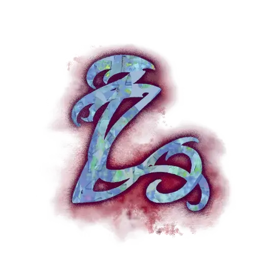

Метка тени
Mark of Shadow
Черта Драконьей метки (Требования: кампания в Эберроне, не можете иметь другую черту Драконьей метки)

Вы получаете следующие преимущества:
Хитроумная интуиция. Когда вы совершаете проверку Ловкости (Скрытность) или Харизмы (Выступление), вы можете бросить 1к4 и прибавить выпавшее число к результату проверки.
Формы теней. Вы знаете заговор Малая иллюзия. У вас также всегда подготовлено заклинание Невидимость. Вы можете сотворить его один раз без траты ячейки заклинаний, и вы восстанавливаете возможность сотворить это заклинание таким образом по завершению Долгого отдыха. Кроме того, вы можете сотворять его, используя имеющиеся у вас ячейки заклинаний подходящих уровней. Ваша заклинательная характеристика для него — Интеллект, Мудрость или Харизма (вы выбираете, когда получаете эту черту).
Заклинания метки. Если у вас есть классовое умение Сотворение заклинаний или Магия договора, то заклинания из следующей таблицы добавляются в список заклинаний этого умения.
Заклинания Метки тени
| Уровень заклинания | Заклинания |
| 1 | Безмолвный образ, Маскировка |
| 2 | Бесследное передвижение, Тьма |
| 3 | Образ, Подсматривание |
| 4 | Высшая невидимость, Мираж |
| 5 | Фальшивый двойник |